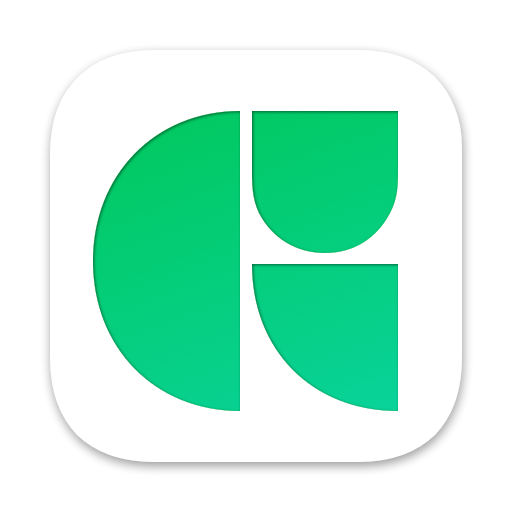
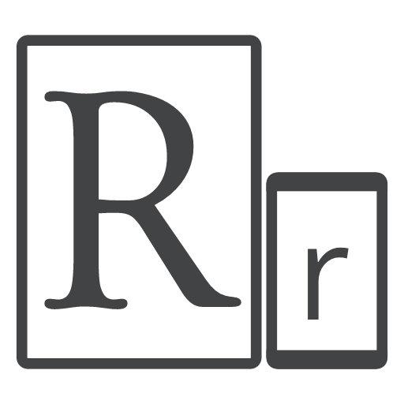

Venez en apprendre un peu plus sur moi !
C'est en école d'Art, à l'ESADHaR que je découvre ma passion pour le graphisme. Je me forme par moi-même à pleins de techniques et domaines différents, notamment le design graphique et les techniques d'impressions. Puis plus tard, pour améliorer mon kit de compétences, je me spécialise dans le Web grâce à une formation à La MANU.
Actuellement, je vis et travail au Havre. Voici la liste de mes diplômes :
DNA (Diplôme National Superieur d'Art) – 2019
DNSEP (Diplôme National Supérieur d'Expression Plastique) – 2021
CDUI (Concepteur Designer UI) – 2022
Ah, et j'ai mon permis B aussi ! Mais il paraît que ce n'est pas un diplôme alors bon…
Maîtrise
Je suis très attaché aux images. C'est pourquoi c'est le pillier de mon travail, que ce soit en tant que graphiste ou que web designer. Je maîtrise le dessin traditionnel et vectoriel, me permettant de contruire toute votre identité graphique : de votre logo jusqu'au site web!
Le dessin vectoriel permet de réaliser des pictogrammes, des logotypes, et tout les autres éléments qui marqueront la signature de votre identité visuelle et/ou de votre site.
Le dessin traditionnel (en pixel) permet de réaliser des illustrations ou de retoucher vos photos/images. Permettant de réaliser de superbes illustrations ou de rendre vos photos saisissantes.
La Photographie me permettra de documenter et d'illustrer vos produits ou votre démarche. Offrant un rendu visuel et plus humain de votre activité.
Je possède des connaissances typo et micro-typographiques. Pour que vos textes soient parfaitement écrits et mis en formes. Me permettant de proposer des associations de polices adéquates.
Teamwork
Organisé
Dynamique
Mes Compétences
Je répartis mes compétences en deux catégories : d'un côté, le Webdesign (UI / UX), et de l'autre le Graphisme (Logo / Typographie / Illustration / Vidéo).
Programmation
Je travail énormément l'interface et le design de mes sites web. J'essaie de construire des sites fonctionnels, mais dont l'esthétique accroche vraiment les visiteurs. J'aime implémenter dans mes projets des éléments dynamiques.


- HTML5
- CSS3
- JavaScript
- Processing
Graphisme
J'ai commencé mon parcours en tant que graphiste, j'ai donc une bonne expertise pour les identités graphiques et réalisations visuelles. J'applique mes connaissances esthétiques dans mon travail print ET web.


- Illustrator
- Photoshop
- InDesign
- Fontlab
Vidéo
La vidéo est un support très intéressant pour présenter une entreprise ou son activité, que se soit pour un réseau social, sur votre site internet ou simplement en local. Je réalise des montages vidéos et des motion design.


- PremièrePro
- After Effect
Quelques autres outils dont je me sers :
Web :
 Adobe XD
Adobe XD Figma
Figma WordPress
WordPress
Frameworks :
 Bootstrap
Bootstrap GSAP
GSAP
Organisation :  GitHub
GitHub Trello
Trello Visual Studio Code
Visual Studio Code
3D :
 ZBrush
ZBrush Blender
Blender
Autres :
-  Glyphs
-  ResponsivelyApp
- Papier & Stylo
Mes Expériences
Voici une liste de mes expériences profesionnelles dans le Web et le Graphisme :
2016 – 2019
DNA – Design Graphique (ESADHaR – Le Havre)
2019 – 2021
DNSEP – Design Graphique, filière Numérique (ESADHaR – Le Havre)
2021 – 2022
Titre Professionnel niveau 6 (La MANU – Le Havre)
Portfolio
Voici des photos de mon mémoire "978-1569-0352-52", réalisé pour mon diplôme de master. Il traite de la cryptographie et notamment des codes-barres. Dans une réflexion autour de la simplification de la lecture et des efforts nécessaires pour comprendre dans le champ du design graphique. Mais aussi ce que signifie crypter ses créations visuelles, quel est l'intérêt et quel est le message véhiculé ? J'y met en vis-à-vis ces usages et ces questionnement.
Restons en Contact !
Merci de l'intérêt que vous avez porté à mon CV (surtout si vous êtes arrivé jusqu'ici). N'hésitez pas, si vous souhaitez me confier un projet, travailler avec moi, ou même allez boire un café (enfin moi j'aime pas ça, mais ça n'empêche rien…), n'hésitez pas à m'envoyez un message !